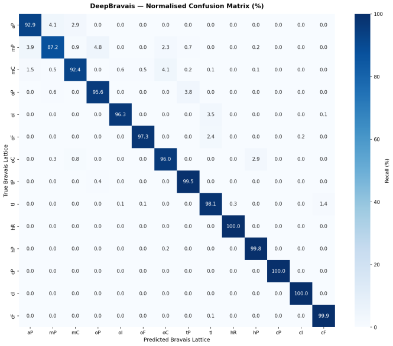

DeepBravais is a physics-informed 1D residual network that classifies powder X-ray diffraction (PXRD) patterns into all 14 Bravais lattice types from first-principles simulations — no experimental database required.
A physics-informed deep learning pipeline that synthesises realistic X-ray diffraction patterns from first principles, then trains a compact 1D ConvNeXt to distinguish all 14 crystal symmetry classes — in Q-space, so scale invariance is preserved.
Random unit-cell parameters drawn per Bravais class from physically valid ranges
Closed-form IUCr formulae applied via vectorised NumPy — no pymatgen overhead
Scherrer broadening, mixed Lorentz–Gauss peak profiles, randomised FWHM
Photon-counting noise at 500–5 000 counts/bin to simulate real instruments
Depthwise-separable residual classifier trained end-to-end on synthetic patterns
Rather than downloading a multi-hundred-GB experimental database, all patterns are generated entirely on CPU using a vectorised NumPy physics engine, achieving a 20–50× speedup over pymatgen.
Bypasses pymatgen's Python-object overhead by pre-computing (h,k,l) grids and running fully vectorised matrix multiplications.
python data_generator.py \ --n_samples 500000 \ --numpy
Each pattern is a 1 024-point intensity array on a fixed Q-axis spanning 0.7–6.0 Å⁻¹, normalised to [0, 1].
Depthwise-separable convolutions with an inverted-bottleneck FFN and stochastic depth regularisation — adapted from ConvNeXt-V1 to the 1-D signal domain and trained with mixed-precision FP16.
End-to-end training from random initialisation to 96.78% test accuracy, completed in approximately one hour using mixed-precision FP16 on a single Kaggle GPU.

Macro F1-score of 0.9676 across all 14 classes. Cubic lattices reach near-perfect classification. The main source of confusion is between mP and mC, as expected from their similar systematic-absence rules.